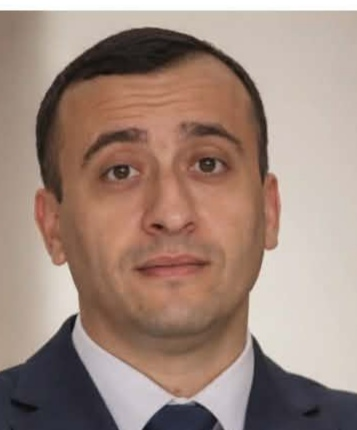

حملة المترشح نوري عنقاق
معًا من أجل رؤية واضحة، عمل ميداني، وإصغاء حقيقي لانشغالات سكان قجال.
تعرف على نوري عنقاق

مرشح للانتخابات البلدية في قجال، يطرح رؤية ترتكز على العمل الميداني، الاستماع إلى المواطنين، وتحسين الخدمات المحلية.
الهدف هو بناء تواصل مستمر بين المواطن والبلدية ومتابعة الانشغالات المحلية بطريقة واضحة ومنظمة.
الأولويات المقترحة للحملة
الاهتمام بالنظافة وتحسين المحيط الحضري والريفي ومتابعة النقاط التي تحتاج إلى تدخل.
متابعة حالة الطرقات والإنارة العمومية واقتراح حلول عملية حسب الأولويات.
تحسين التواصل مع المواطنين وتسهيل الوصول إلى المعلومات والخدمات البلدية.
دعم الأنشطة الرياضية والثقافية وخلق فضاءات أفضل للشباب.
تشجيع المبادرات والمشاريع التي يمكن أن تساهم في تنمية المنطقة وخلق فرص اقتصادية.
فتح قنوات تواصل مباشرة لجمع الانشغالات ومتابعتها بشكل منظم.
منصة للتواصل مع سكان قجال
نشر أخبار ونشاطات الحملة ومواعيد اللقاءات.
إرسال الاقتراحات والانشغالات إلى فريق الحملة.
عرض المحاور والأفكار المقترحة بشكل واضح.
صوت المواطن واقتراحاته جزء مهم من النقاش حول مستقبل البلدية.